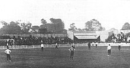
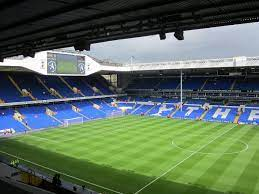
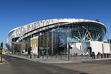

Stadium History of Tottenham Hotspur
Early grounds
Spurs played their early matches on public land at the Park Lane end of Tottenham Marshes, where they had to mark out and prepare their own pitch. Occasionally fights broke out on the marshes in disputes with other teams over the use of the ground. The first Spurs game reported by the local press took place on Tottenham Marshes on 6 October 1883 against Brownlow Rovers, which Spurs won 9-0. It was at this ground that, in 1887, Spurs first played the team that would later become their arch rivals, Arsenal (then known as Royal Arsenal), leading 2-1 until the match was called off due to poor light after the away team arrived late.
As they played on public parkland, the club could not charge admission fees and, while the number of spectators grew to a few thousand, it yielded no gate receipts. In 1888, the club rented a pitch between numbers 69 and 75 Northumberland Park at a cost of £17 per annum, where spectators were charged 3d a game, raised to 6d for cup ties. The first game at the Park was played on 13 October 1888, a reserve match that yielded gate receipts of 17 shillings. The first stand with just over 100 seats and changing rooms underneath was built at the ground for the 1894-95 season at a cost of £60. However, the stand was blown down a few weeks later and had to be repaired. In April 1898, 14,000 fans turned up to watch Spurs play Woolwich Arsenal. Spectators climbed on the roof of the refreshment stand for a better view of the match. The stand collapsed, causing a few injuries. As Northumberland Park could no longer cope with the larger crowds, Spurs were forced to look for a larger ground and moved to the White Hart Lane site in 1899.
White Hart Lane
The White Hart Lane ground was built on an unused plant nursery owned by the Charrington Brewery and located behind a public house named the White Hart on Tottenham High Road (the road White Hart Lane actually lies a few hundred yards north of the main entrance). The ground was initially leased from Charringtons, and the stands they used at Northumberland Park were moved here, giving shelter for 2,500 spectators. Notts County were the first visitors to 'the Lane' in a friendly watched by 5,000 people and yielding £115 in receipts; Spurs won 4-1. Queens Park Rangers became the first competitive visitors to the ground and 11,000 people saw them lose 1-0 to Tottenham. In 1905, Tottenham raised enough money to buy the freehold to the land, as well as land at the northern (Paxton Road) end.
After Spurs were admitted to the Football League, the club started to build a new stadium, with stands designed by Archibald Leitch being constructed over the next two and a half decades. The West Stand was added in 1909, the East Stand was also covered this year and extended further two years later. The profits from the 1921 FA Cup win were used to build a covered terrace at the Paxton Road end and the Park Lane end was built at a cost of over £3,000 some two years later. This increased the stadium's capacity to around 58,000, with room for 40,000 under cover. The East Stand (Worcester Avenue) was finished in 1934 and this increased capacity to around 80,000 spectators and cost £60,000
Starting in the early 1980s, the stadium underwent another major phase of redevelopment. The West Stand was replaced by an expensive new structure in 1982, and the East Stand was renovated in 1988. In 1992, following the Taylor Report's recommendation that Premier League clubs eliminate standing areas, the lower terraces of the south and east stand were converted to seating, with the North Stand becoming all-seater the following season. The South Stand redevelopment was completed in March 1995 and included the first giant Sony Jumbotron TV screen for live game coverage and away match screenings. In the 1997-98 season the Paxton Road stand received a new upper tier and a second Jumbotron screen. Minor amendments to the seating configuration were made in 2006, bringing the capacity of the stadium to 36,310.

By the turn of the millennium, the capacity of White Hart Lane had become lower than other major Premier League clubs. Talks began over the future of the ground with a number of schemes considered, such as increasing the stadium capacity through redevelopment of the current site, or using of the 2012 London Olympic Stadium in Stratford. Eventually the club settled on the Northumberland Development Project, whereby a new stadium would be built on a larger piece of land that incorporated the existing site. In 2016, the northeast corner of the stadium was removed to facilitate the construction of the new stadium. As this reduced the stadium capacity below that required for European games, Tottenham Hotspur played every European home game in 2016-17 at Wembley Stadium. Domestic fixtures of the 2016-17 season continued to be played at the Lane, but demolition of the rest of the stadium started the day after the last game of the season, and White Hart Lane was completely demolished by the end of July 2017.
Tottenham Hotspur Stadium
In October 2008, the club announced a plan to build a new stadium immediately to the north of the existing White Hart Lane stadium, with the southern half of the new stadium's pitch overlapping the northern part of the Lane. This proposal would become the Northumberland Development Project. The club submitted a planning application in October 2009 but, following critical reactions to the plan, it was withdrawn in favour of a substantially revised planning application for the stadium and other associated developments. The new plan was resubmitted and approved by Haringey Council in September 2010,and an agreement for the Northumberland Development Project was signed on 20 September 2011.
After a long delay over the compulsory purchase order of local businesses located on land to the north of the stadium and a legal challenge against the order, resolved in early 2015, planning application for another new design was approved by Haringey Council on 17 December 2015. Construction started in 2016, and the new stadium was scheduled to open during the 2018-19 season. While it was under construction, all Tottenham home games in the 2017-18 season as well as all but five in 2018-19 were played at Wembley Stadium. After two successful test events, Tottenham Hotspur officially moved into the new ground on 3 April 2019 with a Premier League match against Crystal Palace which Spurs won 2-0. The new stadium is called Tottenham Hotspur Stadium while a naming-rights agreement is reached.